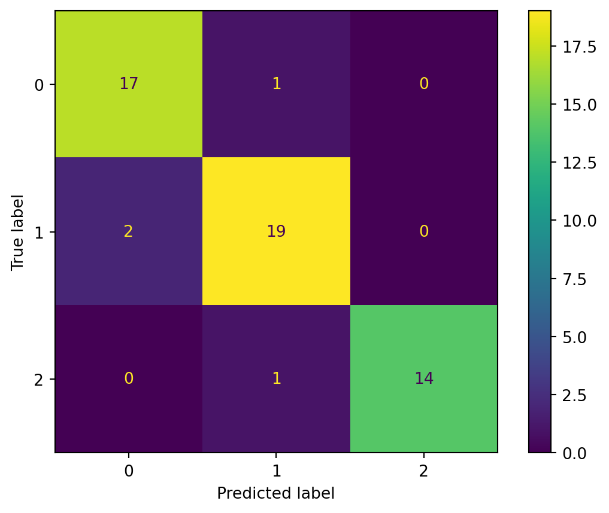

6 Logistic Regression
Logistic regression is a classification method for binary outcomes. It estimates the conditional probability of the positive class and then converts that probability into a class decision only after a threshold is chosen. Many of the materials were already covered in Chapter 2. We provide more details in this section.
6.1 Binary Response
6.1.1 Probability
Suppose \(Y \in \qty{0,1}\). We usually call \(Y=1\) the positive class, success class, or class \(1\), and \(Y=0\) the negative class, failure class, or class \(0\).
For a given predictor vector \(x\), define \[ p(x)=\Pr(Y=1\mid X=x). \] Then \[ \Pr(Y=0\mid X=x)=1-p(x). \]
Note
Any probability is within \([0,1]\). Therefore it is bounded.
6.1.2 Odds
If an event occurs with probability \(p\), its odds are \(\frac{p}{1-p}\). Odds compare the probability that the event occurs with the probability that it does not occur.
For binary classification,
\[ \text{odds of class }1 = \frac{P(Y=1\mid X=x)} {P(Y=0\mid X=x)} = \frac{p(x)} {1-p(x)}. \]
Note
Odds take values in \((0,\infty)\). Comparing to probability, odds remove the upper bound of probability, but they are still restricted to be positive.
6.1.3 Logit and Log-Odds
To remove the positivity restriction of odds, we take a logarithm.
Definition 6.1 (Logit) The logit of a probability \(p\) is
\[ \logit(p)=\log\qty(\frac{p}{1-p}). \]
It is also called the log-odds.
The inverse of the logit function is the logistic (sigmoid) function. It will be discussed next.
Note
The logit transformation maps probabilities from \((0,1)\) to the entire real line \((-\infty,\infty)\).
Example 6.1
| \(p\) | Odds | Logit | Interpretation |
|---|---|---|---|
| \(0.10\) | \(1/9\) | \(\log(1/9)\approx -2.197\) | Failure is much more likely than success |
| \(0.50\) | \(1\) | \(0\) | Success and failure are equally likely |
| \(0.75\) | \(3\) | \(\log(3)\approx 1.099\) | Success is three times as likely as failure |
| \(0.90\) | \(9\) | \(\log(9)\approx 2.197\) | Success is nine times as likely as failure |
6.2 The Logistic Regression Model
Logistic regression assumes that the log-odds are linear in the predictors:
\[ \logit(p(x))=\beta_0+\beta_1x_1+\cdots+\beta_p x_p. \]
Equivalently,
\[ \log\qty(\frac{p(x)}{1-p(x)})=\beta_0+\beta_1x_1+\cdots+\beta_p x_p. \]
This is the main equation of logistic regression.
6.2.1 From Log-Odds Back to Probability
Starting from
\[ \log\qty(\frac{p(x)}{1-p(x)})=\beta_0+\beta_1x_1+\cdots+\beta_p x_p=x^\top\beta, \]
exponentiating both sides gives
\[ \frac{p(x)}{1-p(x)}= \exp(x^\top\beta). \]
Solving for \(p(x)\) gives
\[ p(x)= \frac{\exp(x^\top\beta)}{1+\exp(x^\top\beta)}=\frac{1}{1+\exp(-x^\top\beta)}. \]
Definition 6.2 (The Sigmoid function) Define \[ \sigma(z)=\frac{1}{1+\exp(-z)}. \] This is the Sigmoid function, also called the logistic function.
With this definition, the logistic regression can be written as
\[ p(x)=\sigma(x^\top\beta)=\sigma(\beta_0+\beta_1x_1+\cdots+\beta_p x_p=x^\top\beta). \]
The logistic function has several important properties.
- \(0<\sigma(z)<1\). So it always produces a valid probability for every real number \(z\).
- It is increasing: \(z_1<z_2\quad\Rightarrow\quad\sigma(z_1)<\sigma(z_2)\).
- \(p(x)\) is \[ \begin{cases} \text{close to }0,&\text{ if }x^\top\beta<<0,\\ 0.5,&\text{ if }x^\top\beta=0,\\ \text{close to }1,&\text{ if }x^\top\beta>>0. \end{cases} \]
The curve is displayed as follows.
NoteHistorical Note
The logistic curve was introduced by Pierre-François Verhulst in 1838 [1] while studying population growth.
The term logit was introduced by Joseph Berkson in 1944 [2]. Berkson used the word logit for the logarithm of the odds and advocated the logistic function in bioassay problems.
Logistic regression later became a central example of generalized linear models. In GLM terminology, logistic regression uses:
- Bernoulli response distribution;
- logit link function;
- linear predictor \(x^\top\beta\).
6.2.2 Logistic Regression as a Linear Classifier
Logistic regression produces probabilities, therefore it can also be used for classification.
Using the common threshold \(t=0.5\), we predict
\[ \hat y = \begin{cases} 1,& p(x)\ge 0.5,\\ 0,& p(x)<0.5. \end{cases} \]
Since
\[ p(x)\ge 0.5 \iff x^\top\beta\ge 0, \]
the classification rule becomes
\[ \hat y = \begin{cases} 1,& x^\top\beta\ge 0,\\ 0,& x^\top\beta<0. \end{cases} \]
Therefore, the decision boundary is
\[ x^\top\beta=0. \]
NoteGeometric Interpretation
The decision boundary \(x^\top\beta=0\) is a line in two dimensions, a plane in three dimensions, and a hyperplane in higher dimensions.
Thus logistic regression is a linear classifier: Even though the probability curve is nonlinear, the decision boundary is linear in the original predictor space.
6.2.3 Interpreting the Coefficients
Consider the model \[ p(x)=\sigma(\beta_0+\beta_1x_1+\ldots+\beta_px_p), \] where \(\beta_0+\beta_1x_1+\ldots+\beta_px_p=x^\top \beta\) is the linear predictor.
Suppose all other predictors are held fixed. Increasing \(x_j\) by one unit changes the linear predictor by \(\beta_j\). Because the linear predictor represents the log-odds, increasing \(x_j\) by one unit changes the log-odds by \(\beta_j\).
Thus:
- if \(\beta_j>0\), increasing \(x_j\) increases the log-odds of class \(1\);
- if \(\beta_j<0\), increasing \(x_j\) decreases the log-odds of class \(1\);
- if \(\beta_j=0\), increasing \(x_j\) does not change the log-odds.
For a one-unit increase in \(x_j\), holding all other predictors fixed, the linear predictor increases by \(\beta_j\). Since \(\beta_j\) is a change in log-odds, exponentiating gives a multiplicative change in odds, then the odds are expected to be multiplied by \(\exp(\beta_j)\):
Consider \[ \log(\text{odds}_1)-\log(\text{odds}_2)=\beta_j. \] Then \[ \frac{\text{odds}_1}{\text{odds}_2}=\me^{\beta_j}. \]
Definition 6.3 (Odds Ratio) The quantity \(\exp(\beta_j)\) is called the odds ratio.
Example 6.2 (Example) Suppose \(\beta_j=0.08\). Since
\[ \exp(0.08)\approx 1.083, \] Then a one-unit increase in \(x_j\) multiplies the odds by approximately \(1.083\). Equivalently, the odds increase by approximately \(8.3\%\).
Note
The coefficient \(\beta_j\) is not a direct change in probability since the relation between the logit and the probability is a sigmoid function (which is non-linear). So the probability change depends on the current value of \(x^\top\beta\). For the same value of \(\beta_j\), the probability change can be small when \(p(x)\) is already close to \(0\) or close to \(1\), and larger when \(p(x)\) is near \(0.5\).
6.3 Maximum Likelihood Estimation
Logistic regression is usually fit using maximum likelihood estimation.
Assume we are given a dataset \(\qty{(x_i,y_i)}_{i=1}^n\), where \(y_i\in\qty{0,1}\). In logistic regression, we model the conditional probability that the response belongs to class \(1\): \[ p_i=\Pr(Y_i=1\mid X_i=x_i)=\sigma(x_i^\top\beta). \]
Since \(Y_i\) only takes the values \(0\) and \(1\), it is natural to model its conditional distribution using a Bernoulli distribution. \[ Y_i\mid X_i=x_i\sim\operatorname{Bernoulli}(p_i). \]
The probability mass function of a Bernoulli random variable is
\[ \Pr(Y_i=y_i) = p_i^{y_i}(1-p_i)^{1-y_i}. \]
Assuming the observations are independent and conditional on the predictors, the likelihood function is
\[ L(\beta) = \prod_{i=1}^{n} p_i^{y_i}(1-p_i)^{1-y_i}. \]
Taking the logarithm, the log-likelihood is
\[ \ell(\beta)=\sum_{i=1}^{n}\qty[y_i\log(p_i)+(1-y_i)\log(1-p_i)]. \]
The maximum likelihood estimate is
\[ \hat\beta = \arg\max_{\beta}\ell(\beta). \]
NoteGradient descent
Unlike ordinary least squares, logistic regression does not have a simple closed-form solution for \(\hat\beta\). In practice, numerical optimization methods are used.
Gradient descent is one of the most widely used optimization methods in machine learning. Although linear regression and logistic regression use different models and different loss functions, their gradient expressions have a similar matrix form. As a result, their gradient descent update formulas also look very similar.
Gradient descent is beyond the scope of this course, although it plays an important role in modern machine learning.
6.3.1 Binary Cross-Entropy and a Single Neuron
The negative log-likelihood is
\[ -\ell(\beta) = -\sum_{i=1}^{n} \left[ y_i\log(p_i) + (1-y_i)\log(1-p_i) \right]. \]
In machine learning, this is called binary cross-entropy loss or log loss. It is simply the negative of the log-likelihood mentioned in the previous section. The reason of this negative is that in machine learning it is usually preferred to lower the loss function.
Therefore logistic regression is not just a classification model. It is also a probabilistic model trained by minimizing a loss function that rewards accurate probability estimates.
What is more, a logistic regression model can be viewed as a single sigmoid neuron, since the model has the form
\[ x \longmapsto x^\top\beta \longmapsto \sigma(x^\top\beta) \longmapsto p(x). \]
This is essentially a neural network with no hidden layers and one output unit, with sigmoid activation and binary cross-entropy loss.
This connects logistic regression to modern machine learning methods, including neural networks, which often use cross-entropy loss for classification.
6.4 Regularized Logistic Regression
When there are many predictors, logistic regression can overfit. A common solution is to add regularization, like ridge and lasso for linear regression.
- Ridge logistic regression penalizes large coefficients using an \(L^2\) penalty:
\[ -\ell(\beta) + \lambda\sum_{j=1}^{p}\beta_j^2. \] This shrinks coefficients toward zero but usually does not set them exactly to zero.
- Lasso logistic regression uses an \(L^1\) penalty:
\[ -\ell(\beta) + \lambda\sum_{j=1}^{p}|\beta_j|. \] This can shrink some coefficients exactly to zero, producing a simpler model.
6.5 Logistic Regression in sklearn
We usually use LogisticRegression from sklearn.linear_model to implement logistic regression. The most commonly used solver in modern versions of scikit-learn is lbfgs, which is the default choice for LogisticRegression(). It is a quasi-Newton optimization method that usually converges much faster than simple gradient descent. In addition it is automatically extended to multiclass cases.
The basic code is as usual:
from sklearn.pipeline import make_pipeline
from sklearn.preprocessing import StandardScaler
from sklearn.linear_model import LogisticRegression
logit = make_pipeline(
StandardScaler(),
LogisticRegression(max_iter=5000),
)
logit.fit(X_train, y_train)
test_prob = logit.predict_proba(X_test)
test_pred = logit.predict(X_test)Logistic regression is very similar to linear regression, that the scales of features matters. Therefore we need to set up a pipeline to standarize al features first.
The model actually has two types of outputs:
predict_proba()returns estimated class probabilities. The second column is the estimated probability of the positive class.predict()returns class labels using the default threshold \(0.5\).
6.5.1 Regularization
The general idea of regularization in LogisticRegression() is based on the elastic-net style penalty, which is controlled by two arguments l1_ratio and C. Conceptually, the penalty behaves like \[
-\ell+\frac1C(\verb|l1_ratio|\norm{\beta}_1+(1-\verb|l1_ratio|)\norm{\beta}_2^2).
\]
l1_ratiois to control the type of regularization:l1_ratio = 0: pure L2 regularization;l1_ratio = 1: pure L1 regularization;0 < l1_ratio < 1: elastic-net regularization.
C, which is \(1/\lambda\), is to control the regularization strength:C=np.infmeans no penalty.
The exact formula used inside sklearn is more complicated which incorprates other aspects such as number of observations.
Note that some combinations of regularization and solvers are not compatible. For example,
- elastic-net regularization requires the
sagasolver; - the default solve
lbfgsrequiresl2sol1_ratiohas to be 0.
The default setting for LogisticRegression() is that l1_ratio=0, C=1 and solver="lbfgs".
6.6 Example 1: Binary classification
We first consider a binary classification problem.
The Titanic dataset records information about passengers aboard the Titanic. Our goal is to predict whether a passenger survived. We load the dataset from the database from seaborn.
import seaborn as sns
from sklearn.model_selection import train_test_split
titanic = sns.load_dataset("titanic")
data = titanic[["survived", "age", "fare", "pclass"]].dropna()
X = data[["age", "fare", "pclass"]]
y = data["survived"]
X_train, X_test, y_train, y_test = train_test_split(
X, y, test_size=0.3, stratify=y, random_state=1
)Here we only use 3 features age, fare and pclass to predict survived.
We quickly fit the model with default setting.
from sklearn.pipeline import make_pipeline
from sklearn.preprocessing import StandardScaler
from sklearn.linear_model import LogisticRegression
logit = make_pipeline(StandardScaler(), LogisticRegression(max_iter=5000))
logit.fit(X_train, y_train)
test_prob = logit.predict_proba(X_test)[:, 1]
test_pred = logit.predict(X_test)- 1
-
For binary classification, the output of
.predict_proba()contains two columns, each for a class. We want to test 1, so we choose column 1.
We focus on tuning C and the threshold. Note that the two hyperparameters take effects in different stage. C is about the training of the model, while the threshold is about prediction. Therefore for logistic regression we usually tune C first and then find the best threshold afterwards.
6.6.1 Tuning C
We use cross-validation with the F1 score as the evaluation metric. Since the F1 score combines precision and recall, it is useful when we want to balance false positives and false negatives. In this example, we use it to select a model that balances the two types of classification errors when predicting passenger survival.
import numpy as np
from sklearn.model_selection import GridSearchCV
param_grid = {"logisticregression__C": np.logspace(-3, 3, 20)}
grid = GridSearchCV(logit, param_grid=param_grid, cv=5, scoring="f1")
grid.fit(X_train, y_train)
grid.best_params_{'logisticregression__C': np.float64(2.976351441631316)}6.6.2 Tuning the threshold
To tune the threshold, we use the helper function defined in Chapter 2.
from sklearn.metrics import accuracy_score, precision_score, recall_score, f1_score
from sklearn.metrics import confusion_matrix
def classification_summary(y_true, prob, threshold=0.5):
pred = (prob >= threshold).astype(int)
TN, FP, FN, TP = confusion_matrix(y_true, pred).ravel()
return {
"threshold": threshold,
"TP": TP,
"FP": FP,
"FN": FN,
"TN": TN,
"accuracy": accuracy_score(y_true, pred),
"precision": precision_score(y_true, pred, zero_division=0),
"recall": recall_score(y_true, pred, zero_division=0),
"f1": f1_score(y_true, pred, zero_division=0),
}We may use the regular split-validation method. The model use the best C from the cross-validation from the previous section.
from sklearn.model_selection import train_test_split
import pandas as pd
X_model, X_valid, y_model, y_valid = train_test_split(
X_train, y_train, test_size=0.25, stratify=y_train, random_state=1
)
best_C = grid.best_params_['logisticregression__C']
candidate_thresholds = np.linspace(0.05, 0.95, 91)
results = []
for t in candidate_thresholds:
best_logit = make_pipeline(
StandardScaler(),
LogisticRegression(C=best_C, max_iter=5000),
)
best_logit.fit(X_model, y_model)
valid_prob = best_logit.predict_proba(X_valid)[:, 1]
results.append(classification_summary(y_valid, valid_prob, threshold=t))
threshold_df = pd.DataFrame(results)
best_row = threshold_df.loc[threshold_df["f1"].idxmax()]
best_row- 1
-
best_rowis a Series object. Therefore although it is a row, it is displayed as a column.
threshold 0.360000
TP 39.000000
FP 17.000000
FN 12.000000
TN 57.000000
accuracy 0.768000
precision 0.696429
recall 0.764706
f1 0.728972
Name: 31, dtype: float64We can fix the threshold and treat it as part of the prediction rule.
from sklearn.model_selection import FixedThresholdClassifier
final_logit = make_pipeline(
StandardScaler(), LogisticRegression(C=best_C, max_iter=5000)
)
model_with_threshold = FixedThresholdClassifier(
final_logit, threshold=best_row["threshold"]
)
model_with_threshold.fit(X_train, y_train)
model_with_threshold.score(X_test, y_test)0.6465116279069767
Note
Notice that changing the threshold does not change the fitted model. The estimated probabilities remain the same. The threshold only changes how those probabilities are converted into class labels.
6.7 Multiclass Extension
The basic logistic regression model handles binary outcomes. For problems with more than two classes, a common extension is multinomial logistic regression.
Suppose
\[ Y\in{1,2,\ldots,K}. \]
Instead of modeling the probability of a single class, multinomial logistic regression models the probability of every class simultaneously.
For each class \(k\), define a linear predictor
\[ \eta_k(x)=x^\top\beta_k=\beta_{0,k}+\beta_{1,k}x_1+\ldots+\beta_{p,k}x_p. \]
The predicted probability of class \(k\) is then given by the softmax function:
\[ \Pr(Y=k\mid X=x)= \frac{\exp(\eta_k(x))} {\sum_{\ell=1}^{K}\exp(\eta_\ell(x))}. \]
The softmax function converts the collection of scores
\[ \eta_1(x),\eta_2(x),\ldots,\eta_K(x) \]
into probabilities that satisfy
\[ 0\le \Pr(Y=k\mid X=x)\le 1 \]
and
\[ \sum_{k=1}^{K}\Pr(Y=k\mid X=x)=1. \]
The softmax function plays the same role in multiclass classification that the sigmoid function plays in binary classification.
Note
For K=2 classes, softmax reduces to the sigmoid model.
For prediction, the observation is assigned to the class with the largest predicted probability:
\[ \hat y=\arg\max_k P(Y=k\mid X=x). \]
6.7.1 Cross-Entropy Loss
Suppose the true class labels are represented using one-hot encoding:
\[ y_{ik}= \begin{cases} 1,&\text{if observation }i\text{ belongs to class }k,\\ 0,&\text{otherwise}. \end{cases} \]
Let
\[ p_{ik}=P(Y_i=k\mid X_i=x_i) \]
denote the predicted probability from the softmax model.
The multiclass cross-entropy loss is
\[ L=-\sum_{i=1}^{n}\sum_{k=1}^{K}y_{ik}\log(p_{ik}). \]
Because exactly one value of \(y_{ik}\) equals \(1\) for each observation, this loss simply penalizes the model when it assigns a low probability to the true class.
Minimizing the multiclass cross-entropy loss is equivalent to maximizing the likelihood of the multinomial logistic regression model, just as binary cross-entropy corresponds to maximum likelihood estimation in ordinary logistic regression.
NoteOne-vs-Rest (OvR)
Another approach to multiclass classification is One-vs-Rest (OvR), also called One-vs-All.
Instead of fitting a single multinomial model, OvR trains one binary classifier for each class. For example, with three classes A, B, and C, three separate models are fit:
- A versus not A
- B versus not B
- C versus not C
The final prediction is usually made using the classifier with the largest predicted probability.
Although OvR is simple and often works well in practice, multinomial logistic regression provides a more natural probabilistic model because all class probabilities are estimated simultaneously and automatically sum to one.
Note
solver
There are many algorithms for fitting logistic regression models. In scikit-learn, these optimization algorithms are specified through the solver argument. Examples include "lbfgs", "newton-cg", "newton-cholesky", "sag", "saga", and "liblinear".
Different solvers use different optimization techniques and may have different computational properties. Some are better suited for large datasets, while others are designed for smaller problems or support additional features such as regularization.
Historically, some solvers handled multiclass classification using a One-vs-Rest (OvR) strategy, while others directly fit a multinomial logistic regression model using the softmax formulation.
In this course, we focus on the multinomial (softmax) approach because it provides a natural extension of binary logistic regression and is widely used in modern machine learning. The details of optimization algorithms are beyond the scope of this course.
6.8 Example 2: Multinomial Logistic Regression
The Titanic example involved two classes. We now consider a multiclass classification problem using the wine dataset.
from sklearn.datasets import load_wine
from sklearn.model_selection import train_test_split
wine = load_wine(as_frame=True)
X = wine.data[["alcohol", "flavanoids", "color_intensity"]]
y = wine.target
X_train, X_test, y_train, y_test = train_test_split(
X, y, test_size=0.3, stratify=y, random_state=1
)We fit a multinomial logistic regression model.
from sklearn.pipeline import make_pipeline
from sklearn.preprocessing import StandardScaler
from sklearn.linear_model import LogisticRegression
wine_logit = make_pipeline(
StandardScaler(),
LogisticRegression(max_iter=5000),
)
wine_logit.fit(X_train, y_train)
test_prob = wine_logit.predict_proba(X_test)
test_pred = wine_logit.predict(X_test)6.8.1 Probabilities and Softmax
For multiclass problems, logistic regression uses the softmax formulation discussed earlier.
test_prob[:5]array([[3.32849861e-02, 4.58338942e-02, 9.20881120e-01],
[7.81045388e-02, 3.03513972e-02, 8.91544064e-01],
[1.29661355e-02, 5.23981366e-05, 9.86981466e-01],
[7.03100543e-03, 9.90470483e-01, 2.49851168e-03],
[3.96520174e-02, 9.59921408e-01, 4.26574383e-04]])Each row contains the estimated probabilities for all classes. The probabilities always sum to one.
test_prob[:5].sum(axis=1)array([1., 1., 1., 1., 1.])The predicted class is the class with the largest probability.
test_pred[:5]array([2, 2, 2, 1, 1])Unlike binary logistic regression, there is usually no threshold parameter to tune. The model simply predicts the class with the highest probability.
6.8.2 Confusion Matrix
from sklearn.metrics import ConfusionMatrixDisplay
ConfusionMatrixDisplay.from_predictions(y_test, test_pred)
We could also directly generate the classification report.
from sklearn.metrics import classification_report
print(classification_report(y_test, test_pred)) precision recall f1-score support
0 0.89 0.94 0.92 18
1 0.90 0.90 0.90 21
2 1.00 0.93 0.97 15
accuracy 0.93 54
macro avg 0.93 0.93 0.93 54
weighted avg 0.93 0.93 0.93 54
The report provides precision, recall, and F1 scores for each class separately.
Note
For multiclass logistic regression, the regularization parameter C can be tuned in the same way as in the binary classification example.
However, there is usually no single threshold parameter to tune. The standard prediction rule is to choose the class with the largest predicted probability.
In this example, we skip the tuning step for C because the procedure is the same as before.